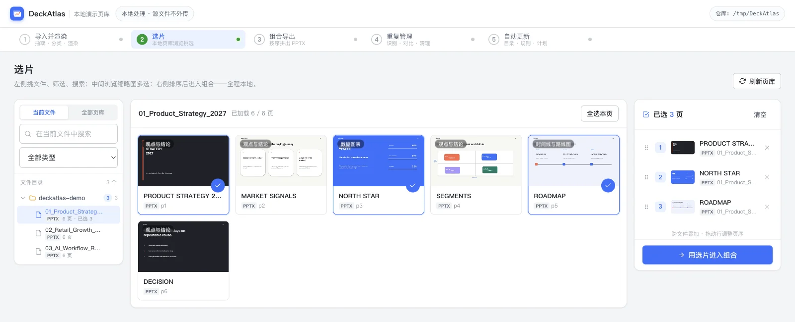

Search
01 / WHY
你的最佳页面，通常已经存在。
问题不是没有内容，而是历史方案散落在文件夹里。靠文件名和记忆寻找， 找到以后还要逐份打开、复制、排序。
DeckAtlas 把文件视角改成页面视角。标题、正文、备注、文件名和目录都能搜索， 搜到的是可直接预览和选中的真实页面。
02 / WORKFLOW
从历史素材到下一份稿，只保留三步。

-
01
建立页库
选择 PPTX 或文件夹。DeckAtlas 在本地拆页、提取文本并生成高清预览。
导入 · 索引 · 预览 -
02
找到并选中
按标题、正文、备注、文件名和分类搜索，从不同源稿持续加入页面。
搜索 · 筛选 · 跨稿选片 -
03
重新组稿
拖拽调整顺序，再复制原生页面结构，导出仍可编辑的 PPTX。
排序 · 校验 · 导出
03 / PRODUCT
不是再做一遍，而是把已经做过的用起来。
Preview
真实页面预览
缩略图、高清大图与键盘翻页，先看清再决定。Select
跨文件选片
选片顺序持久保存，刷新或重启后继续工作。Compose
可编辑 PPTX
复制原生 OOXML 页面结构，不把页面压成图片。Maintain
目录持续更新
先预检变化，再按计划更新常用素材目录。Clean
重复页管理
本地识别和人工确认，只清理索引与缓存。04 / LOCAL BY DEFAULT
演示资料留在你的电脑里。
DeckAtlas 不上传、不移动、不复制源 PPTX。SQLite 索引、缩略图、高清预览和 选片记录都保存在本机。
- 源文件
- 只读引用，仍由你管理
- 页面索引
- 本地 SQLite
- 预览资源
- 本地缓存，可清理
- 组合导出
- 写入你选择的位置
05 / BETA
DeckAtlas 0.3.0 Beta
首个公开 Beta 正在准备发布。当前构建面向 macOS 13+ Apple Silicon， 预览渲染需要 LibreOffice。
版本
v0.3.0-beta.1
平台
macOS 13+ · Apple Silicon
必要依赖
LibreOffice
发布状态
等待签名、公证与 Release
06 / DETAILS
当前边界
导出的 PPT 还能编辑吗？
可以。DeckAtlas 复制源页面的 OOXML 结构及其关联资源，不是把预览图贴回 PPT。
删除页面会删除源文件吗？
不会。删除只影响 DeckAtlas 的本地索引和预览缓存，源 PPTX 保持不变。
为什么需要 LibreOffice？
当前 Beta 使用 LibreOffice 生成 PPTX 的缩略图和高清预览。组合导出本身不会把页面重新渲染成图片。
现在支持 Windows 或 Intel Mac 吗？
当前公开预览构建只面向 Apple Silicon Mac。其他平台仍需完成打包与验证。